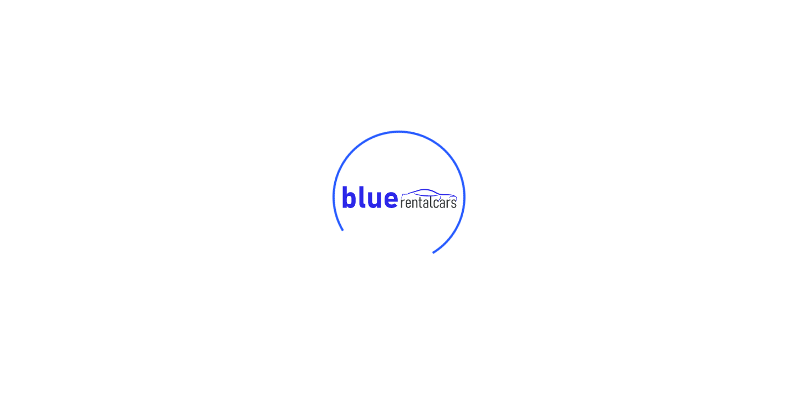
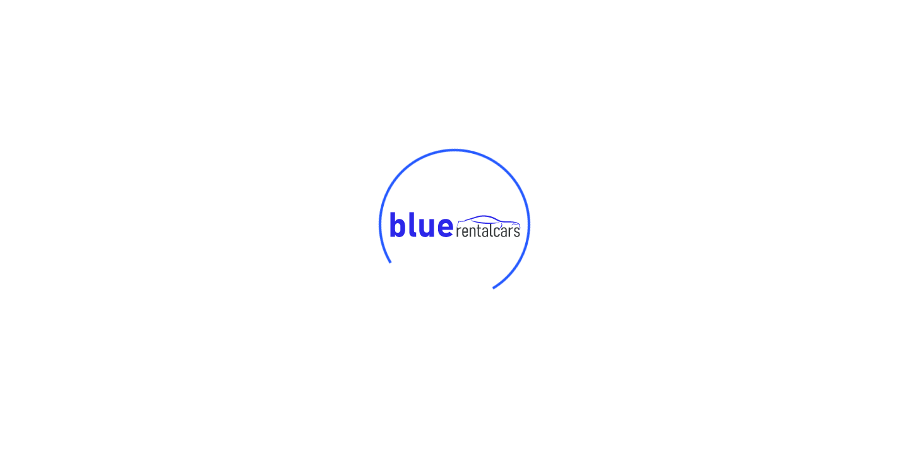

Started
Jun 20, 2022 09:52:05 PM
Ended
Jun 20, 2022 09:52:37 PM
Features Passed
0
Features Failed
1
Features
Scenarios
Steps
Timeline
Tags
| Name | Passed | Failed | Skipped | Others | Passed % |
|---|---|---|---|---|---|
| @customer_login | 0 | 9 | 0 | 0 | 0% |
-
customer_login
9:52:08 PM / 00:00:28:832 Fail
customer_login
06.20.2022 9:52:08 PM 06.20.2022 9:52:37 PM 00:00:28:832 · #test-id=1Faillogin_customer_profile_testingFaillogin_customer_profile_testingGiven user is on the login pageAnd user login dropdownAnd user sends username "customer@bluerentalcars.com"Step skippedAnd user sends password "12345"Step skippedWhen user clicks on login buttonStep skippedThen capture the screenshotStep skippedThen close the applicationStep skippedhooks.Hooks.tearDown(io.cucumber.java.Scenario)screenshotsFaillogin_customer_profile_testingGiven user is on the login pageAnd user login dropdownAnd user sends username "customer1@bluerentalcars.com"Step skippedAnd user sends password "12346"Step skippedWhen user clicks on login buttonStep skippedThen capture the screenshotStep skippedThen close the applicationStep skippedhooks.Hooks.tearDown(io.cucumber.java.Scenario)screenshots Faillogin_customer_profile_testingGiven user is on the login pageAnd user login dropdownAnd user sends username "customer2@bluerentalcars.com"Step skippedAnd user sends password "12347"Step skippedWhen user clicks on login buttonStep skippedThen capture the screenshotStep skippedThen close the applicationStep skippedhooks.Hooks.tearDown(io.cucumber.java.Scenario)screenshotsFaillogin_customer_profile_testingGiven user is on the login pageAnd user login dropdownAnd user sends username "customer3@bluerentalcars.com"Step skippedAnd user sends password "12348"Step skippedWhen user clicks on login buttonStep skippedThen capture the screenshotStep skippedThen close the applicationStep skippedhooks.Hooks.tearDown(io.cucumber.java.Scenario)screenshotsFaillogin_customer_profile_testingGiven user is on the login pageAnd user login dropdownAnd user sends username "customer@bluerentalcars.com"Step skippedAnd user sends password "12345"Step skippedWhen user clicks on login buttonStep skippedThen capture the screenshotStep skippedThen close the applicationStep skippedhooks.Hooks.tearDown(io.cucumber.java.Scenario)screenshots
Faillogin_customer_profile_testingGiven user is on the login pageAnd user login dropdownAnd user sends username "customer2@bluerentalcars.com"Step skippedAnd user sends password "12347"Step skippedWhen user clicks on login buttonStep skippedThen capture the screenshotStep skippedThen close the applicationStep skippedhooks.Hooks.tearDown(io.cucumber.java.Scenario)screenshotsFaillogin_customer_profile_testingGiven user is on the login pageAnd user login dropdownAnd user sends username "customer3@bluerentalcars.com"Step skippedAnd user sends password "12348"Step skippedWhen user clicks on login buttonStep skippedThen capture the screenshotStep skippedThen close the applicationStep skippedhooks.Hooks.tearDown(io.cucumber.java.Scenario)screenshotsFaillogin_customer_profile_testingGiven user is on the login pageAnd user login dropdownAnd user sends username "customer@bluerentalcars.com"Step skippedAnd user sends password "12345"Step skippedWhen user clicks on login buttonStep skippedThen capture the screenshotStep skippedThen close the applicationStep skippedhooks.Hooks.tearDown(io.cucumber.java.Scenario)screenshots Faillogin_customer_profile_testingGiven user is on the login pageAnd user login dropdownAnd user sends username "customer1@bluerentalcars.com"Step skippedAnd user sends password "12346"Step skippedWhen user clicks on login buttonStep skippedThen capture the screenshotStep skippedThen close the applicationStep skippedhooks.Hooks.tearDown(io.cucumber.java.Scenario)screenshots
Faillogin_customer_profile_testingGiven user is on the login pageAnd user login dropdownAnd user sends username "customer1@bluerentalcars.com"Step skippedAnd user sends password "12346"Step skippedWhen user clicks on login buttonStep skippedThen capture the screenshotStep skippedThen close the applicationStep skippedhooks.Hooks.tearDown(io.cucumber.java.Scenario)screenshots Faillogin_customer_profile_testingGiven user is on the login pageAnd user login dropdownAnd user sends username "customer2@bluerentalcars.com"Step skippedAnd user sends password "12347"Step skippedWhen user clicks on login buttonStep skippedThen capture the screenshotStep skippedThen close the applicationStep skippedhooks.Hooks.tearDown(io.cucumber.java.Scenario)screenshots
Faillogin_customer_profile_testingGiven user is on the login pageAnd user login dropdownAnd user sends username "customer2@bluerentalcars.com"Step skippedAnd user sends password "12347"Step skippedWhen user clicks on login buttonStep skippedThen capture the screenshotStep skippedThen close the applicationStep skippedhooks.Hooks.tearDown(io.cucumber.java.Scenario)screenshots Faillogin_customer_profile_testingGiven user is on the login pageAnd user login dropdownAnd user sends username "customer3@bluerentalcars.com"Step skippedAnd user sends password "12348"Step skippedWhen user clicks on login buttonStep skippedThen capture the screenshotStep skippedThen close the applicationStep skippedhooks.Hooks.tearDown(io.cucumber.java.Scenario)screenshots
Faillogin_customer_profile_testingGiven user is on the login pageAnd user login dropdownAnd user sends username "customer3@bluerentalcars.com"Step skippedAnd user sends password "12348"Step skippedWhen user clicks on login buttonStep skippedThen capture the screenshotStep skippedThen close the applicationStep skippedhooks.Hooks.tearDown(io.cucumber.java.Scenario)screenshots
-
@customer_login
9 tests
@customer_login
9 failedStatus Timestamp TestName Fail 21:52:08 PM login_customer_profile_testing customer_login.login_customer_profile_testingFail 21:52:08 PM login_customer_profile_testing customer_login.login_customer_profile_testingFail 21:52:18 PM login_customer_profile_testing customer_login.login_customer_profile_testingFail 21:52:20 PM login_customer_profile_testing customer_login.login_customer_profile_testingFail 21:52:22 PM login_customer_profile_testing customer_login.login_customer_profile_testingFail 21:52:31 PM login_customer_profile_testing customer_login.login_customer_profile_testingFail 21:52:33 PM login_customer_profile_testing customer_login.login_customer_profile_testingFail 21:52:34 PM login_customer_profile_testing customer_login.login_customer_profile_testingFail 21:52:35 PM login_customer_profile_testing customer_login.login_customer_profile_testing
-
org.openqa.selenium.NoSuchElementException
8 tests
org.openqa.selenium.NoSuchElementException
8 failedStatus Timestamp TestName Fail 21:52:17 PM And user login dropdown customer_login.login_customer_profile_testing.And user login dropdownFail 21:52:19 PM And user login dropdown customer_login.login_customer_profile_testing.And user login dropdownFail 21:52:21 PM And user login dropdown customer_login.login_customer_profile_testing.And user login dropdownFail 21:52:22 PM And user login dropdown customer_login.login_customer_profile_testing.And user login dropdownFail 21:52:33 PM And user login dropdown customer_login.login_customer_profile_testing.And user login dropdownFail 21:52:34 PM And user login dropdown customer_login.login_customer_profile_testing.And user login dropdownFail 21:52:35 PM And user login dropdown customer_login.login_customer_profile_testing.And user login dropdownFail 21:52:36 PM And user login dropdown customer_login.login_customer_profile_testing.And user login dropdown